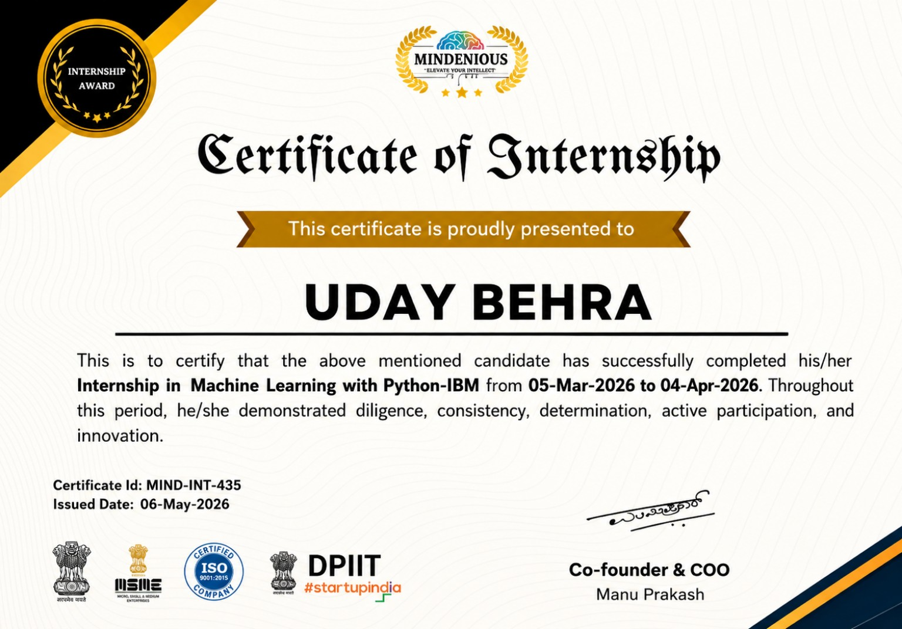
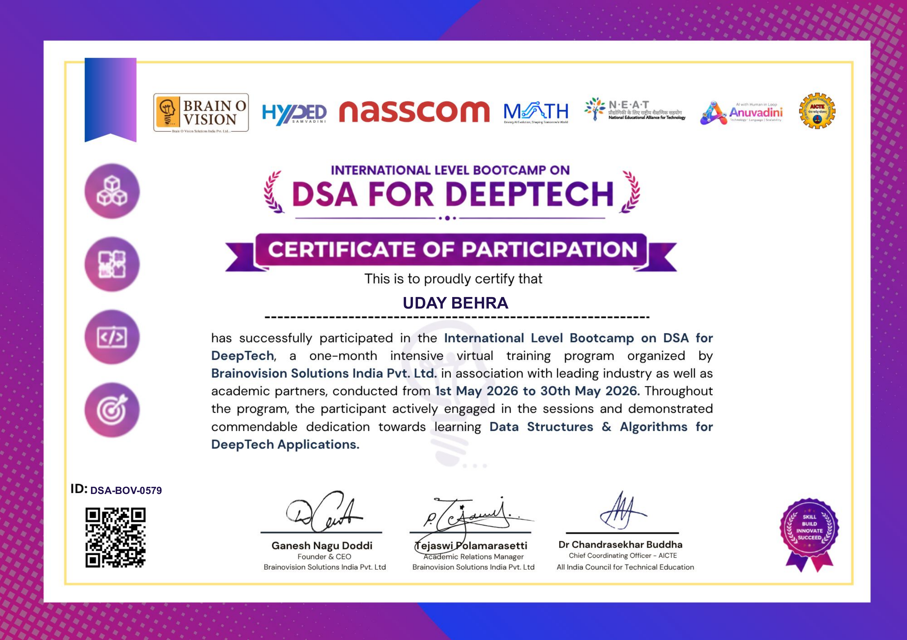

Programming
Writing logic, solving problems and building foundations.
PythonCC++JavaC#JavaScript
HELLO WORLD — I'M UDAY BEHRA
BCA student, developer and Data Science & AI/ML enthusiast. I enjoy building useful digital products and exploring ideas at the intersection of code and intelligence.

A LITTLE INTRODUCTION
I'm Uday, a Bachelor of Computer Applications student at Srinath University (2024–2027), focused on growing as a developer and moving deeper into Data Science and Artificial Intelligence.
I learn best by making things. From academic software and web experiences to Python-based exploration, every project is a chance to solve a problem, understand a tool and get better at the craft.
SKILLS & TECHNOLOGIES
A growing toolkit shaped by coursework, hands-on practice and projects.
Writing logic, solving problems and building foundations.
Creating responsive interfaces and application workflows.
Exploring data analysis, visualisation and machine learning.
Working with development tools and structured data.
PROJECTS

A library workflow application covering book records, students, staff, issue and return operations, renewals and fine handling.
An AI-focused web experience built with a modern frontend stack.
View projectA surplus-food redistribution concept designed to connect available food with people who need it.
View projectA C++ project demonstrating transaction flows, conditions and programming fundamentals.
A C programming project built around game rules, loops and structured problem solving.
A practical build combining mechanical construction, design thinking and problem solving.
EDUCATION & EXPERIENCE
Building a strong foundation while exploring where technology can take me next.
Srinath University · School of Information Technology
Persevex EdTech · Practical learning in data science and machine learning.
Strengthening Python, data tools, web development and problem-solving through hands-on work.


05 / GET IN TOUCH
Have a project idea, collaboration in mind, or just want to connect? My inbox is open.
Start a conversation